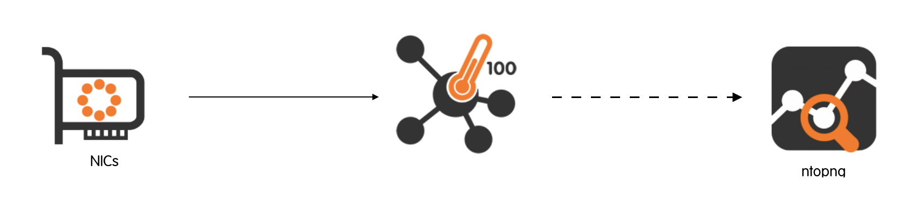
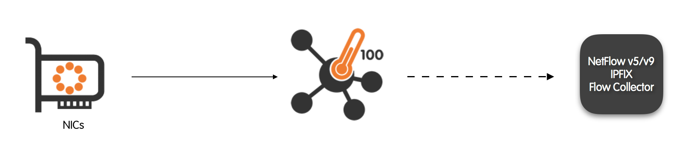
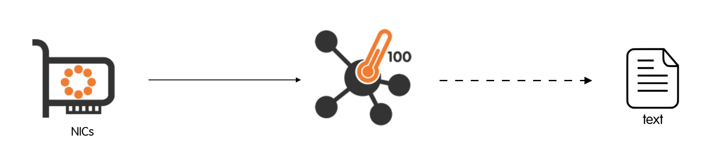
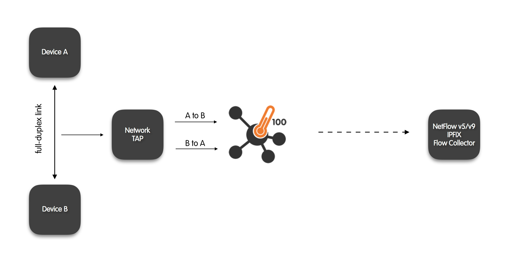
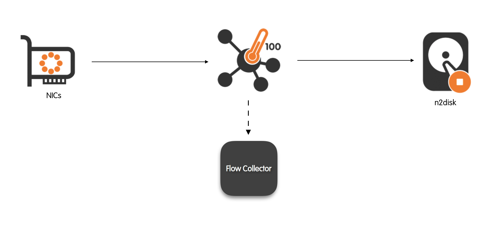
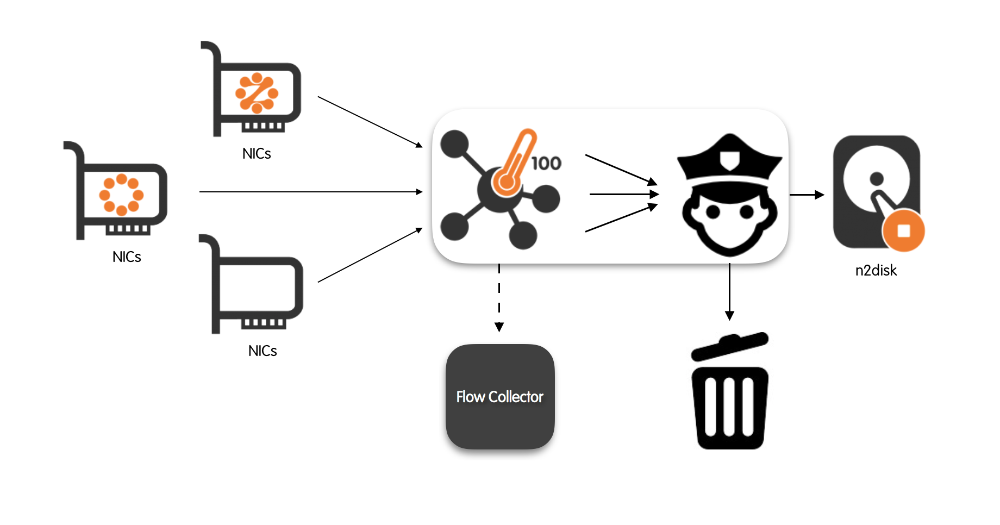
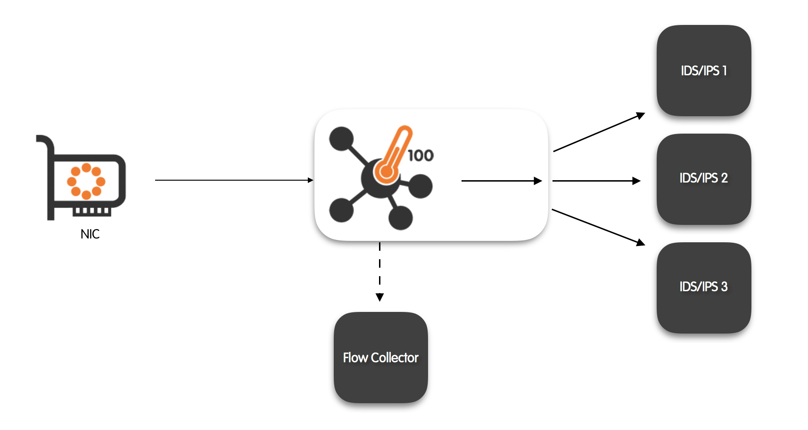

Варианты использования
В этом разделе перечислен полный, но не исчерпывающий набор вариантов использования nProbe™ Cento. Варианты использования варьируются от быстрого экспорта сетевых потоков до более сложной интеграции с регистраторами трафика и системами обнаружения/предотвращения вторжений (IDS/IPS). Высокая гибкость nProbe™ Cento позволит эффективно решать следующие задачи:
Быстро преобразуйте сетевые пакеты в потоки, которые можно хранить, анализировать или экспортировать в специальное или стороннее программное обеспечение. Например, потоки могут быть отправлены на ntopng для выполнения задач сетевой разведки, таких как историческое расследование перегрузок или вторжений. Альтернативно, потоки можно отправлять в Apache Kafka для дальнейшей обработки или хранения в экосистеме Hadoop.
Пересылайте сетевые пакеты на устройство записи трафика, такое как n2disk, с существенным контролем политики пересылки. Политики пересылки позволяют, например, исключить зашифрованный трафик с целью снижения нагрузки на регистратор.
Беспрепятственная интеграция с системами предотвращения и обнаружения вторжений (IDS/IPS), распределяя сетевой трафик по нескольким очередям вывода. Балансировка трафика в нескольких очередях имеет то преимущество, что несколько процессов/экземпляров IDS/IPS могут работать параллельно с значимыми подмножествами трафика.
В основе каждого возможного варианта использования лежит прямая необходимость перехвата пакетов, проходящих через один или несколько сетевых интерфейсов. nProbe™ Глубоко параллельная архитектура Cento позволяет захватывать пакеты с нескольких входных интерфейсов параллельно.
nProbe™ Cento использует ускоренную библиотеку PF_RING для захвата пакетов с сетевых интерфейсов. Специализированные (дополнительные) драйверы, поддерживающие PF_RING, позволяют еще больше ускорить захват пакетов за счет эффективного копирования пакетов из драйвера в PF_RING без прохождения через ядро. Эти драйверы поддерживают новую библиотеку копирования PF_RING Zero (ZC) и могут использоваться как стандартные драйверы ядра или в режиме обхода ядра zero-copy, добавив префикс zc: к имени интерфейса.

Библиотека PF_RING логически разделена на модули для поддержки сетевых карт (NICs), выпускаемых несколькими поставщиками. Чтобы выбрать правильный модуль, достаточно передать правильные имена интерфейсов в nProbe™ Cento. Интерфейсы передаются с использованием опции -i, и им необязательно предшествует префикс. Примеры включают, помимо прочего:
-i eth1 для использования адаптера Vanilla Linux;
-i zc:eth1 для использования драйверов ZC;
Например, для захвата трафика с интерфейса eth0 nProbe™ Cento можно запустить как
cento -i eth0 [...]
Альтернативно, для захвата трафика из четырех очередей eth1 ZC можно использовать следующую команду:
cento -i zc:eth1@0 -i zc:eth1@1 -i zc:eth1@2 -i zc:eth1@3 [...]
Поскольку количество очередей, а также количество интерфейсов может значительно вырасти, допускается компактное обозначение с использованием квадратных скобок. Компактное обозначение можно использовать для краткого обозначения интерфейсов и очередей. Например, приведенную выше команду можно переписать, используя компактную запись, как
cento -i zc:eth1@[0-3] [...]
Когда PF_RING недоступен, nProbe™ Cento захватывает пакеты, используя стандартные библиотеки для захвата пакетов на уровне пользователя.
Теперь, когда мы познакомились с перехватом пакетов и сетевыми интерфейсами, обсуждение может перейти к реальным вариантам использования nProbe™ Cento.
Экспортер потока 100 Гбит/с
В этом первом (возможно, даже самом простом) сценарии nProbe™ Cento выступает в качестве экспортера потока. Экспортер потока, также обычно называемый просто зондом, захватывает сетевые пакеты, объединяет их в потоки и передает объединенные потоки одному или нескольким сборщикам.
Форматы экспорта потока разнообразны, как и коллекторы. Распространенный формат экспорта: NetFlow в версиях 5 и 9 и IPFIX. Потоки также можно экспортировать в обычные текстовые файлы.
Надежное объединение сетевых пакетов в потоки открывает путь для решения огромного количества задач управления сетью и анализа, в том числе:
Экспорт потоков в один или несколько коллекторов NetFlow v5/v9/IPFIX для:
Создайте модульную масштабируемую инфраструктуру мониторинга сети;
Беспрепятственная интеграция с существующей инфраструктурой мониторинга за счет быстрого добавления новых точек обзора.
Внедряйте потоки в кластер Hadoop через Apache Kafka, чтобы обеспечить дальнейшую обработку, например, с помощью систем потоковых вычислений в реальном времени, таких как Apache Spark Streaming, Storm и Samza.
Передавайте потоки в инструмент визуализации и анализа сети с открытым исходным кодом ntopng, чтобы эффективно исследовать сетевые проблемы с помощью современных интерактивных диаграмм.
Сохраняйте потоки в файл для регистрации событий или будущих расследований.
В оставшейся части этого подраздела мы увидим реальные примеры того, как эффективно использовать nProbe™ Cento в качестве экспортера потоков.
Интеграция с ntopng


ntopng — это версия следующего поколения оригинального ntop, программного обеспечения для исследования сетевого трафика и визуализации. С помощью ntopng можно выполнять широкий спектр операций: от простых сетевых исследований до более сложных задач сетевого анализа. Большая гибкость ntopng позволяет ему работать как сборщик потоков nProbe™ / nProbe™ Cento посредством сжатого, опционально зашифрованного формата сетевого обмена, построенного на основе Zero-M-Queue (ZMQ) или с помощью сокета на сервере. Такая гибкость позволяет полностью отделить сложные задачи обработки пакетов, выполняемые nProbe™ Cento, от визуализации и анализа, выполняемых через ntopng.
Основное различие между ZMQ и локальным сокетом заключается в том, что с помощью ZMQ вы можете доставлять потоки на удаленный (т.е. работающий на хосте, отличном от того, на котором работает cento) экземпляр ntopng за счет преобразования информации о потоке в JSON и ее доставки через ZMQ. При использовании локального сокета преобразование не требуется, поэтому скорость увеличивается, информация доставляется на ntopng в копии zero за счет запуска ntopng на том же компьютере, где работает cento.
ZMQ |
Локальное гнездо PF_RING ZC |
|
Сеть |
Да |
Нет |
Скорость сбора |
Хороший |
Высокий |
Несколько потребителей потока |
Да |
Один |
Экспорт потоков в ntop более ZMQ
Настройка nProbe™ Cento и ntopng для обмена данными потока через ZMQ по сути представляет собой двухстрочную операцию. Допустим, nProbe™ Cento должен отслеживать интерфейс eth1 и экспортировать сгенерированные потоки через ZMQ в экземпляр ntopng для визуализации и хранения. Следующей команды достаточно для правильного запуска nProbe™ Cento.
cento -i eth0 --zmq tcp://192.168.2.130:5556
В приведенной выше команде предполагается, что существует экземпляр ntopng, прослушивающий данные потока ZMQ на хосте 192.168.2.130, порт 5556. Последний экземпляр может быть выполнен как
ntopng -i tcp://*:5556c
Как видно из опции -i, ntopng обрабатывает удаленные потоки потоков так, как если бы они исходили из физического подключенного интерфейса. На самом деле различий в использовании пользовательского интерфейса ntopng не будет. Такая большая гибкость позволяет создавать сложные и даже географически распределенные инфраструктуры мониторинга сети. Визуализация и хранение данных отслеживаемых потоков может осуществляться на специально выделенном оборудовании, виртуальных машинах (ВМ) или даже в физически разных центрах обработки данных, которым достаточно общего сетевого подключения только с экземплярами nProbe™ Cento.
Примечание: завершающая буква c (после порта 5556) указывает ntopng на запуск в режиме коллектора. Это означает, что он будет слушать и ждать, пока cento доставит потоки. Пропуск c помешает правильной связи между cento и ntopng.
Потоки, экспортированные через ZMQ, шифруются по умолчанию: если специальный ключ не настроен через --zmq-ключ-шифрования, nProbe™ Cento использует общедоступный встроенный ключ по умолчанию, общий для каждой установки Cento/ntopng, который предотвращает только случайное раскрытие открытого текста. Выделенная пара ключей, сгенерированная ntopng, должна быть настроена для любого развертывания, требующего реальной конфиденциальности. См. --zmq-ключ-шифрования описание опции в разделе Параметры и ntopng документация для получения подробной информации о настройке шифрования ZMQ.
Экспорт потоков в ntop через сокет ZC
Чтобы экспортировать потоки в ntopng с помощью PF_RING ZC, вам необходимо настроить огромные страницы Linux, как описано далее в этом руководстве. Готово, нужно запустить cento с -A (и без —-zmq)
cento -A ...
В журнале запуска cento вы найдете строки как
3/Aug/2018 09:45:34 [EgressInterface.cpp:119] Initialized ZC cluster 10 for the monitor interface
3/Aug/2018 09:45:34 [cento.cpp:1458] You can now start ntopng as follows: ntopng -i zcflow:10@0
это означает, что вам нужно присоединить ntopng к кластеру ZC 10 (обратите внимание, что вы можете изменить идентификатор кластера ZC по умолчанию, используя параметр командной строки —-cluster-id|-—C).
Используя сокет ZC, путь связи cento с ntopng будет намного более эффективным, но, учитывая, как работает ntopng, который предоставляет много богатой статистики, пожалуйста, не забывайте, что вы не можете ожидать, что один экземпляр ntopng будет обрабатывать 40 Gbit или 100 Gbit данных мониторинга, отправленных cento, без потерь потока.
Примечание. При запуске cento с несколькими интерфейсами захвата и экспорте потоков в ntopng с помощью -A все потоки по умолчанию объединяются в одну выходную очередь ZC. Такое агрегирование может стать узким местом при мониторинге высокоскоростного трафика от нескольких интерфейсов.
--direct-monitor Опция включает однозначное сопоставление между потоками захвата и выходными очередями. Вместо объединения всех потоков в одну очередь, cento создает одну выходную очередь ZC для каждого интерфейса захвата. Это устраняет накладные расходы на агрегацию и позволяет ntopng обрабатывать потоки от каждого интерфейса параллельно.
Например, для захвата трафика из четырёх очередей ZC с прямым мониторингом:
cento -i zc:eth1@[0-3] -A --direct-monitor
В журнале запуска cento вы найдете такие строки:
You can now start ntopng as follows: ntopng -i zcflow:10@0 -i zcflow:10@1 -i zcflow:10@2 -i zcflow:10@3
Затем ntopng можно запустить с несколькими интерфейсами для параллельного чтения потоков из каждой очереди. Обратите внимание, что при использовании --direct-monitor, вам нужно будет пройти несколько -я опции на ntopng, по одному для каждой выходной очереди, как показано в примере выходных данных выше.
Преимущества режима прямого мониторинга:
Устраняет накладные расходы на агрегацию: Нет необходимости в отдельном потоке агрегатора ( -М опция не обязательна)
Лучшая масштабируемость: каждый поток захвата доставляет потоки непосредственно в свою выходную очередь.
Параллельная обработка: ntopng может обрабатывать потоки из нескольких очередей одновременно
Интеграция с коллектором NetFlow


Допустим, необходимо добавить точку обзора к существующей инфраструктуре мониторинга сети. Новой точкой обзора может стать, например, коммутатор в только что открывшемся новом офисе. Предположим также, что зеркальный порт коммутатора подключен к хост-интерфейсу nProbe™ Cento eth1.
Предполагая, что в существующей инфраструктуре есть сборщик NetFlow v9, прослушивающий порт 2055 хоста 192.168.1.200, можно выполнить следующую команду, чтобы поручить nProbe™ Cento действовать как экспортер NetFlow v9.
cento -i zc:eth1 --v9 192.168.1.200:2055
Внедрение потоков в Apache Kafka

Apache Kafka может использоваться в организации для сбора данных из нескольких источников и предоставления их в стандартном формате множеству потребителей, включая Hadoop, Apache HBase и Apache Solr. Совместимость nProbe™ Cento с системой обмена сообщениями Kafka делает его хорошим кандидатом на источник сетевых данных.
nProbe™ Cento вводит потоковые «сообщения» в кластер Kafka, отправляя их одному или нескольким брокерам Kafka, которые отвечают за данную тему. И тема, и список брокеров Kafka отправляются с использованием параметра командной строки. Первоначально nProbe™ Cento пытается связаться с одним или несколькими указанными пользователем брокерами для получения метаданных кластера Kafka. Метаданные включают, помимо прочего, полный список доступных в кластере брокеров, отвечающих за данную тему. nProbe™ Cento будет использовать полученный полный список брокеров для доставки «сообщений» потока в циклическом порядке.
nProbe™ Cento также поддерживает дополнительное сжатие сообщений и спецификацию политики подтверждения сообщений. Политики подтверждения позволяют полностью избежать ожидания подтверждений, ждать только подтверждения Kafka лидера или ждать подтверждения от каждой реплики.
В качестве примера предположим, что nProbe™ Cento должен отслеживать интерфейс eth1 и экспортировать сгенерированные потоки в тему Kafka «topicFlows». Можно выполнить следующую команду:
cento -i eth1 --kafka “127.0.0.1:9092,127.0.0.1:9093,127.0.0.1:9094;topicFlows"
Приведенная выше команда предполагает, что потоки необходимо экспортировать по теме themeFlows и что на локальном хосте прослушивают три брокера, порты 9092, 9093 и 9094 соответственно. Цель приведенной выше команды — показать пример того, насколько просто реализовать взаимодействие между nProbe™ Cento и Apache Kafka. За подробным описанием используемой команды мы отсылаем заинтересованного читателя к разделу «Параметры командной строки» настоящего руководства.
Дамп потоков в обычные текстовые файлы


Иногда может быть достаточно просто сохранить сетевые потоки в обычные текстовые файлы. Обычные текстовые файлы очень просты в управлении, их легко перемещать, и они очень хорошо подходят для сжатия и архивирования. Поэтому они по-прежнему являются одним из предпочтительных вариантов, особенно в довольно простых средах.
Однако, поскольку количество экспортируемых потоков может непредсказуемо расти со временем, требуется ясный и простой способ их сохранения в обычные текстовые файлы. nProbe™ Cento организует файлы в иерархическом дереве каталогов, основанном на времени:
Дерево каталогов основано на времени в том смысле, что время рассматривается как разделенное на слоты фиксированного настраиваемого размера. Каждый временной интервал соответствует каталогу в файловой системе.
Дерево каталогов является иерархическим в том смысле, что потоки, наблюдаемые в один и тот же час, будут помещены в один или несколько файлов, содержащихся в каталоге, который, в свою очередь, содержится в другом каталоге, содержащем все часы дня. Каталог, содержащий все часы дня, содержится в каталоге, содержащем все дни месяца и так далее. Поток сохраняется в заданном файле в зависимости от времени его экспорта из зонда.
Отслеживать потоки из интерфейса eth1 и выгружать отслеживаемые потоки в файлы в каталоге /tmp/flows/ так же просто, как
cento -i eth1 --dump-path /tmp/flows
nProbe™ Cento будет создавать файлы и каталоги во время выполнения, например,
/tmp/flows/eth0/2016/05/12/11/1463046368_0.txt
где eth0 — имя интерфейса, 2016 — год, 05 — месяц, 12 — день месяца, 11 — час дня (24-часовой формат), а 1463046368 — это эпоха Unix, которая соответствует последнему пакету, обнаруженному для потоков, сбрасываемых в файл. Необязательный _0 необходим, поскольку можно вывести более одного файла.
Текстовый файл содержит потоки, по одному на строку, каждый из которых представлен в виде списка подробностей, разделенных вертикальными чертами. Содержимое файла, искусственно ограниченное первыми несколькими записями,
# FIRST_SWITCHED|LAST_SWITCHED|VLAN_ID|IP_PROTOCOL_VERSION|PROTOCOL|IP_SRC_ADDR|L4_SRC_PORT|IP_DST_ADDR|L4_DST_PORT|DIRECTION|INPUT_SNMP|OUTPUT_SNMP|SRC_PKTS|SRC_BYTES|DST_PKTS|DST_BYTES|TCP_FLAGS|SRC_TOS|DST_TOS
1463046303.171020|1463046368.234611|0|4|6|192.168.2.222|22|192.168.2.130|62804|R2R|1|2|7|912|12|804|24|0|16
1463046303.562318|1463046303.565914|0|4|6|192.168.2.130|63224|192.168.2.222|443|R2R|1|2|7|944|4|360|27|0|0
1463046303.563135|1463046303.565896|0|4|6|192.168.2.130|63225|192.168.2.222|443|R2R|1|2|7|944|4|360|27|0|0
1463046303.566085|1463046303.950107|0|4|6|192.168.2.130|63226|192.168.2.222|443|R2R|1|2|9|1578|7|1673|27|0|0
1463046303.566253|1463046303.697598|0|4|6|192.168.2.130|63227|192.168.2.222|443|R2R|1|2|9|1575|7|785|27|0|0
1463046304.545697|1463046304.548319|0|4|6|192.168.2.130|63228|192.168.2.222|443|R2R|1|2|7|944|4|360|27|0|0
Доступны и настраиваются пользователем несколько других параметров, в том числе: максимальное количество потоков на файл, максимальный интервал времени для каждого создаваемого текстового файла и максимальный интервал времени для каждого созданного каталога. Более подробно настройки обсуждаются в разделе «Параметры запятой».
Сброс потока в Syslog

Большинство систем на базе Unix имеют очень гибкую систему журналирования, которая позволяет записывать самые разрозненные события, а затем манипулировать журналами для получения ценной информации о прошлых событиях. Системы на базе Unix обычно предоставляют возможность ведения журналов общего назначения, называемую syslog. Отдельные приложения, которым необходимо зарегистрировать информацию, отправляют ее на syslog. nProbe™ Cento входит в число этих приложений, поскольку оно может отправлять «события» потока в syslog, как если бы они были стандартными системными событиями.
Отслеживать потоки из двух очередей eth1 ZC и сбрасывать их в syslog так же просто, как
cento -i zc:eth1@0 -i zc:eth1@1 --json-to-syslog
Отрывок из syslog, содержащий «события» потока:
May 12 12:04:28 devel cento[19497]: {"8":"192.168.2.222","12":"192.168.2.130","10":0,"14":0,"2":10,"1":1512,"24":18,"23":1224,"22":1463047326,"21":1463047468,"7":22,"11":62804,"6":24,"4":6,"5":0}
May 12 12:04:28 devel cento[19497]: {"8":"192.168.2.130","12":"192.168.2.222","10":0,"14":0,"2":7,"1":944,"24":4,"23":360,"22":1463047327,"21":1463047327,"7":65023,"11":443,"6":27,"4":6,"5":0}
May 12 12:04:28 devel cento[19497]: {"8":"192.168.2.130","12":"192.168.2.222","10":0,"14":0,"2":7,"1":944,"24":4,"23":360,"22":1463047327,"21":1463047327,"7":65024,"11":443,"6":27,"4":6,"5":0}
May 12 12:04:28 devel cento[19497]: {"8":"192.168.2.130","12":"192.168.2.222","10":0,"14":0,"2":9,"1":1575,"24":7,"23":785,"22":1463047327,"21":1463047327,"7":65025,"11":443,"6":27,"4":6,"5":0}
Формат, используемый для описания сообщений syslog, представляет собой фактический поток вместе с его деталями, например:
{"8":"192.168.2.222","12":"192.168.2.130","10":0,"14":0,"2":10,"1":1512,"24":18,"23":1224,"22":1463047326,"21":1463047468,"7":22,"11":62804,"6":24,"4":6,"5":0}
В целях оптимизации производительности и экономии места используется формат A JSON. Информация представлена в JSON в виде списка пар «ключ»:значение. Ключи — это целые числа, соответствующие определениям типов полей NetFlow v9. Например, IN_PKTS соответствует целому числу 2, тогда как OUT_PKTS соответствует целому числу 24. Сопоставление между идентификатором поля и именем можно найти в главе 8 RFC 3954 (https://www.ietf.org/rfc/rfc3954.txt).
Экспорт потоков в ClickHouse
nProbe™ Cento может экспортировать потоки непосредственно в базу данных ClickHouse. Формат экспорта совместим с дампом потока ntopng в ClickHouse, что позволяет ntopng читать записи потока, созданные nProbe™ Cento, без необходимости выгружать их самостоятельно. Это особенно полезно в высокоскоростных средах, где nProbe™ Cento выполняет интенсивную обработку пакетов и экспорт потока в ClickHouse, а ntopng используется для визуализации и анализа потока в режиме только для чтения. Подробное описание интеграции см. ClickHouse Экспорт раздел.
Например, чтобы перехватить трафик с интерфейса eth1 и экспортировать потоки в экземпляр ClickHouse, работающий на локальном хосте:
cento -i zc:eth1 --clickhouse 127.0.0.1
Соединение интерфейсов и фильтрация трафика на основе nDPI
Пожалуйста, обратитесь к этот раздел для получения дополнительной информации и использования Cento в качестве сетевого моста.
Полнодуплексный агрегатор TAP + зонд 100 Гбит/с
Сетевые администраторы могут принять решение установить физические устройства TAP между двумя конечными точками, такими как, например, коммутаторы, хосты, серверы или маршрутизаторы. Целью TAP является захват трафика, которым конечные точки обмениваются друг с другом. TAP являются альтернативными решениями встроенных функций зеркалирования портов, доступных на многих коммутаторах и маршрутизаторах. TAP может быть предпочтительнее зеркалирования портов, поскольку он не потребляет ресурсы обработки коммутатора или маршрутизатора, занимая его генерацией зеркалированного трафика.
Очень часто трафик, перехваченный TAP, передается по полнодуплексным технологиям, таким как Ethernet. Полнодуплексный режим означает, что пакеты могут передаваться одновременно в обоих направлениях, например, от устройства A к устройству B и от устройства B к устройству A. Отсюда следует, что совокупная пропускная способность полнодуплексной технологии в два раза превышает номинальную скорость. Например, сетевое соединение со скоростью 1 Гбит/с фактически обеспечивает 2 Гбит совокупной пропускной способности каждую секунду. Это создает проблему, поскольку устройство мониторинга с одним портом, которое получает трафик от TAP, может быть не в состоянии обработать все пакеты, полученные в единицу времени. По этой причине TAP для полнодуплексных технологий обычно имеют два выходных порта, по одному на каждую половину соединения.


nProbe™ Cento имеет возможность объединять два направления получаемого трафика в один совокупный поток, чтобы видеть оба направления трафика, а именно от A к B и от B к A. Полученный агрегированный трафик является полным и всеобъемлющим, поскольку учитываются обе половины полнодуплексного канала. Объединение двух направлений необходимо и фундаментально, например, для точного генерирования данных о потоках и идентификации протоколов уровня 7.
Экспорт агрегированных потоков TAP в коллектор Netflow
Допустим, nProbe™ Cento необходимо использовать в качестве зонда для экспорта данных о потоке, полученных из трафика, полученного от полнодуплексного TAP. Предположим также, что у полнодуплексного TAP два выходных порта подключены к интерфейсам eth1 и eth2 соответственно. Предполагая, что сборщик NetFlow v9 прослушивает порт 2055 хоста 192.168.1.200, который отвечает за сбор данных потоков, собранных из TAP, можно выполнить следующую команду
cento -i eth1,eth2 --v9 192.168.1.200:2055
Зонд 100 Гбит/с + агрегатор трафика
В этом сценарии nProbe™ Cento работает не только как экспортер потоков, но и как агрегатор трафика. То есть он перенаправляет в одну выходную очередь входящий трафик, поступающий от одного или нескольких входных интерфейсов. Таким образом, в качестве агрегатора трафика nProbe™ Cento несет дополнительную обязанность по надежному захвату входных пакетов и правильной пересылке таких пакетов в единую выходную очередь.
Существует несколько реальных ситуаций, в которых необходимо агрегировать трафик из нескольких источников в агрегированный поток. Среди таких ситуаций стоит упомянуть запись трафика, также известную как передача пакетов на диск. Анализ записанного сетевого трафика имеет основополагающее значение, например, при определенных видах аудита и криминалистических расследованиях данных. Действительно, любой пакет, проходящий через сеть, потенциально может содержать вредоносный исполняемый файл или может привести к утечке важной корпоративной информации в Интернет. Способность понять и реконструировать предыдущие ситуации оказывает существенную помощь в предотвращении сбоев и заражений или в выявлении утечек.
Запись пакетов на диск


Среди всех доступных коммерческих регистраторов трафика стоит упомянуть n2disk, поскольку nProbe™ Cento напрямую с ним интегрируется. n2disk™ захватывает полноразмерные сетевые пакеты со скоростью в несколько гигабит (более 10 гигабит/с на соответствующем оборудовании) с действующих сетевых интерфейсов и записывает их в файлы без потери пакетов.
n2disk™ позволяет указать максимальное количество отдельных файлов, которые будут записаны во время выполнения, с целью обеспечения априорной подготовки дисков. Когда n2disk™ достигнет максимального количества файлов, он начнет переработку самых старых файлов. Таким образом, можно получить полное представление о трафике для фиксированного временного окна и в то же время заранее узнать необходимый объем дискового пространства.
И nProbe™ Cento, и n2disk™ были разработаны для полного использования ресурсов, предоставляемых многоядерными системами, агрегирования трафика, поступающего из нескольких независимых входных очередей в первой, и распределения обработки пакетов по нескольким ядрам во второй.
Допустим, nProbe™ Cento должен использоваться в качестве экспортера потока для сборщика v9 NetFlow, прослушивающего порт 192.168.2.221 2055, и в то же время должен агрегировать отслеживаемый трафик, полученный из четырех разных очередей eth1 ZC, в одну агрегированную выходную очередь. Затем можно выполнить следующую команду
cento-ids -i zc:eth1@[0-3] --aggregated-egress-queue \
--egress-conf egress.example --dpi-level 2 \
--v9 192.168.2.221:2055 \
--aggregated-egress-queue
После успешного запуска nProbe™ Cento выведет идентификатор выходной очереди ZC, который необходимо передать в n2disk™. Как более подробно описано далее в этом руководстве, идентификаторы выходных очередей имеют формат zc:<идентификатор кластера>:<идентификатор очереди>. Предполагая, что nProbe™ Cento назначил идентификатор zc:10@0 агрегированной исходящей очереди, можно записать исходящий трафик через n2disk с помощью следующей команды
Значение параметров, переданных в приведенной выше команде, следующее:
-i zc:10@0 — входная очередь n2disk™, то есть выходная очередь nProbe™ Cento
--dump-directory /tmp/recorded — каталог, в котором будут сохранены файлы дампа.
--max-file-len 1024 — максимальная длина файла pcap в мегабайтах.
--buffer-len 2048 — длина буфера в мегабайтах.
--chunk-len 4096 — размер чанка, записываемого на диск, в килобайтах.
--reader-cpu-affinity 4 привязывает поток чтения к ядру 4
--writer-cpu-affinity 5 привязывает поток записи к ядру 5
--index включает индексацию на лету
--index-version 2 включает индексацию на основе потока
--timeline упорядочивает записанные pcap файлы по времени
Сходство чтения и записи CPU не является строго обязательным, но их использование рекомендуется во избежание помех. Во время выполнения новые PCAP-файлы начнут появляться в /tmp/recorded благодаря n2disk™. После нескольких секунд выполнения это может быть результатом
ls -a /storage/*
/storage/1.pcap /storage/2.pcap /storage/3.pcap
n2disk™ был разработан для полного использования нескольких ядер. Минимальное количество внутренних потоков — 2: один для захвата пакетов (чтение) и один для записи на диск (запись), но также можно дополнительно распараллелить захват и индексирование пакетов, используя больше потоков. Чтобы добиться максимальной производительности с помощью n2disk™, также можно распараллелить захват пакетов с использованием нескольких потоков чтения с помощью нового n2disk на базе ZC, который входит в состав пакета n2disk™. Дополнительные сведения о параметрах конфигурации n2disk см. в руководстве n2disk.
Контролируемая запись пакетов на диск


Агрегированные очереди исходящего трафика из нескольких источников должны быть гибкими в том смысле, что пользователь должен иметь детальный контроль над трафиком, который фактически пересылается к ним. Гибкость имеет основополагающее значение, например, чтобы избежать пересылки зашифрованного трафика (например, SSL, HTTPS) на устройства записи трафика или, наоборот, пересылать только тот трафик, который поступает из подозрительного диапазона адресов.
Детальный контроль обеспечивается в nProbe™ Cento посредством иерархического набора правил. Правила определяются с помощью файла конфигурации, соответствующего стандарту INI. Правила могут применяться на трех разных уровнях, а именно на уровне агрегированной очереди, на уровне подсети и на уровне протокола приложения. Правила протокола приложения имеют приоритет над правилами уровня подсети, которые, в свою очередь, имеют приоритет над правилами уровня очереди.
Типов правил пять, а именно: перенаправление, отбрасывание, шунтирование, срез-14 и срез-13. Пересылка и отбрасывание не требуют пояснений, шунт означает, что пересылаются только первые K = 10 пакетов каждого потока, а срез-14 (срез-13) означает, что пакет пересылается только до включенных заголовков уровня 4 (уровня-3).
Например, предположим, что входящий трафик, поступающий из интерфейса ZC eth1, должен быть перенаправлен в единую агрегированную выходную очередь с дополнительными условиями, которые:
По умолчанию для каждого потока пересылается не более K=10 пакетов;
Трафик, исходящий из подсетей 10.0.1.0/24 и 10.10.10.0/24 или направляющийся в них, должен пересылаться без каких-либо ограничений на максимальное количество пакетов на поток.
HTTP трафик всегда должен пересылаться независимо от подсети источника/назначения.
Трафик SSL и SSH всегда должен быть разделен, чтобы гарантировать, что зашифрованные полезные данные уровня 4 никогда не пересылаются в выходную очередь.
Учитывая вышеизложенные условия, можно создать текстовый файл конфигурации ниже:
[shunt]
default = 10
[egress.aggregated]
default = shunt
[egress.aggregated.subnet]
10.0.1.0/24 = forward
10.10.10/24 = forward
[egress.aggregated.protocol]
HTTP = forward
SSL = slice-l4
SSH = slice-l4
Для подробного описания формата файла конфигурации мы отсылаем заинтересованного читателя к разделу «Выходные очереди».
Предполагая, что указанный выше файл конфигурации называется egress.conf и находится в текущем рабочем каталоге, то для обеспечения соблюдения описанных выше политик nProbe™ Cento можно запустить следующим образом:
cento-ids -i zc:eth1 --aggregated-egress-queue \
--egress-conf egress.conf --dpi-level 2
После успешного запуска nProbe™ Cento выведет идентификатор выходной очереди ZC, который необходимо передать в n2disk™, в формате zc:<идентификатор кластера>:<идентификатор очереди>. Предполагая, что nProbe™ Cento присвоил идентификатор zc:10@0 агрегированной исходящей очереди, можно записать исходящий трафик через n2disk™ с помощью следующей команды:
n2disk -i zc:10@0 --dump-directory /storage -—max-file-len 1024 --buffer-len 2048 \
--chunk-len 4096 --reader-cpu-affinity 4 --writer-cpu-affinity 5 \
--index --index-version 2 --timeline-dir /storage
Где -i zc:10@0 — входная очередь n2disk™, то есть выходная очередь nProbe™ Cento.
Пробник 100 Гбит/с + балансировщик трафика для IDS/IPS
nProbe™ Cento имеет возможность балансировать входящий трафик, поступающий от каждого входного интерфейса, в две или более «сбалансированные» выходные очереди. Эта функция особенно полезна, когда трафик необходимо перенаправить в системы обнаружения/предотвращения вторжений (IDS/IPS). Используя балансировщик трафика nProbe™ Cento, можно параллельно запускать несколько экземпляров IDS/IPS, каждый из которых относится к подмножеству входящего трафика. Это позволяет лучше использовать многоядерные системы разработки.


nProbe™ Балансировка Cento выполняется для каждого потока с использованием двухкортежного хеширования (IP src и IP dst), чтобы гарантировать согласованность также для фрагментированных пакетов (не гарантируется 5-кортежным хешированием). Таким образом, гарантируется, что один и тот же поток всегда будет перенаправлен в одну и ту же очередь сбалансированного вывода. Детальный контроль над сбалансированными исходящими очередями доступен с помощью набора иерархических правил. Как уже обсуждалось в предыдущем разделе, правила могут применяться на трех разных уровнях, а именно: на уровне выходной очереди, на уровне подсети и на уровне протокола приложения.
Правила являются иерархическими в том смысле, что правила протокола приложения имеют приоритет над правилами уровня подсети, которые, в свою очередь, имеют приоритет над правилами уровня очереди. Список правил указывается в текстовом файле в стандарте INI.
Типов правил также пять для сбалансированных выходных очередей, а именно: пересылка, отбрасывание, шунтирование, срез-14 и срез-13. Пересылка и отбрасывание не требуют пояснений, шунт означает, что пересылаются только первые K=10 пакетов каждого потока, а срез-l4 (slice-l3) означает, что пакет пересылается только до заголовков уровня 4 (уровня-3).
Интеграция с Suricata IDS/IPS
Допустим, вы хотите сбалансировать очередь ZC eth1 (можно опустить значение 0) по двум сбалансированным очередям вывода. Давайте также обеспечим Suricata IDS/IPS двумя сбалансированными очередями и одновременно экспортируем потоки в сборщик NetFlow v9, прослушивающий локальный хост, порт 1234.
nProbe™ Cento можно запустить как
cento-ids -i zc:eth1 --v9 127.0.0.1:1234 --balanced-egress-queues 2
Идентификаторы сбалансированных очередей выводятся сразу после начала выполнения. Если предположить, что nProbe™ Cento присвоил очередям идентификаторы zc:10@0 и zc:10@1, то можно запустить Suricata IDS/IPS как
suricata --pfring-int=zc:10@0 --pfring-int=zc:10@1 \
-c /etc/suricata/suricata.yaml --runmode=workers
Обратите внимание, что также можно перенаправить трафик на физические интерфейсы и запустить suricata на отдельной машине. В этом случае можно указать список имен интерфейсов, разделенный запятыми:
cento-ids -i zc:eth1 --balanced-egress-queues zc:eth2,zc:eth3
Интеграция с Snort IDS/IPS
Допустим, кто-то хочет сбалансировать одну очередь ZC eth1 (можно опустить значение 0) между двумя сбалансированными выходными очередями и в то же время прикрепить экземпляр Snort IDS/IPS к каждой очереди. Предполагая, что nProbe™ Cento также должен экспортировать потоки в сборщик NetFlow v9, прослушивающий порт 1234 локального хоста, можно выполнить следующую команду
cento-ids -i zc:eth1 --v9 127.0.0.1:1234 --balanced-egress-queues 2 \
--egress-conf egress.conf --dpi-level 2
Предполагая, что nProbe™ Cento присвоил очередям идентификаторы zc:10@0 и zc:10@1, тогда можно запустить два экземпляра Snort IDS/IPS как
snort --daq-dir=/usr/local/lib/daq --daq pfring_zc --daq-mode passive \
-i zc:10@0 -v -e
snort --daq-dir=/usr/local/lib/daq --daq pfring_zc --daq-mode passive \
-i zc:10@1 -v -e
Управление трафиком для каждого приложения
Когда cento IDS настроен с --balanced-egress-queues для балансировки нагрузки на несколько исходящих очередей, можно определить конкретные очереди назначения или интерфейсы для выбранного трафика (например, на основе уровня 7). протокол приложения), создав правила в файле, поставляемом с --egress-conf. Пример правила:
DNS = eth1
В этих правилах можно указать идентификатор очереди или выходной сетевой интерфейс (один из тех, которые определены в тот --balanced-egress-queues параметр). Пожалуйста, проверьте Выходные очереди раздел для получения дополнительных сведений о конфигурации.
В этой конфигурации, поскольку трафик выбирается на основе протокола приложения и механизму DPI требуется несколько пакетов для обнаружения приложения первоначальные пакеты могут быть доставлены не в ту выходную очередь, поскольку протокол все еще неизвестен. Чтобы преодолеть эту проблему, можно настроить cento для хранения пакетов в памяти до тех пор, пока приложение не будет обнаружено (для каждого потока). в этот момент все пакеты пересылаются по назначению. --balanced-egress-buffer для включения этой опции следует использовать опцию функция, передавая в качестве аргумента <размер буфера>, который представляет собой максимальное количество пакетов, которые могут быть помещены в буфер. Размер буфера используется приложением для резервирования памяти огромных страниц во время запуска приложения, и для этого может потребоваться довольно большой объем памяти, в зависимости от настроенного размера (требуемое количество огромных страниц сообщается во время запуска приложения, чтобы соответствующим образом настроить огромные страницы).
Пример командной строки для запуска nProbe™ Cento для захвата трафика от eno1 и балансировки его нагрузки на eth1 и eth2 с внутренним буфер, способный хранить до 1 миллиона пакетов:
cento-ids -i eno1 --balanced-egress-queues eth1,eth2 --egress-conf rules.conf --dpi-level 2 -v 7 --balanced-egress-buffer 1000000